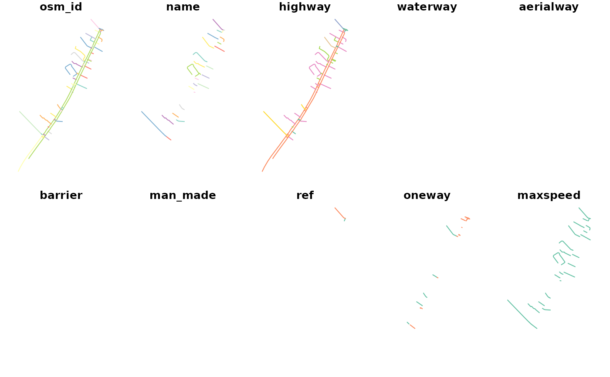

This dataset contains the cycle network for Edinburgh, filtered around Leith Walk.
Examples
head(cycle_net_f)
#> Simple feature collection with 6 features and 67 fields
#> Geometry type: LINESTRING
#> Dimension: XY
#> Bounding box: xmin: -3.179636 ymin: 55.963 xmax: -3.173373 ymax: 55.9699
#> Geodetic CRS: WGS 84
#> osm_id name highway waterway aerialway barrier
#> 331 4082270 Smith's Place residential <NA> <NA> <NA>
#> 2075 4835689 Jane Street unclassified <NA> <NA> <NA>
#> 6540 6176040 Stead's Place residential <NA> <NA> <NA>
#> 6543 6176068 Springfield Street residential <NA> <NA> <NA>
#> 6548 6176166 Arthur Street residential <NA> <NA> <NA>
#> 6550 6176196 Middlefield residential <NA> <NA> <NA>
#> man_made ref oneway maxspeed bicycle cycleway cycleway_left
#> 331 <NA> <NA> <NA> 20 mph <NA> <NA> <NA>
#> 2075 <NA> <NA> no 20 mph <NA> <NA> <NA>
#> 6540 <NA> <NA> <NA> 20 mph <NA> <NA> <NA>
#> 6543 <NA> <NA> <NA> 20 mph <NA> <NA> <NA>
#> 6548 <NA> <NA> yes 20 mph <NA> <NA> <NA>
#> 6550 <NA> <NA> no 20 mph <NA> <NA> <NA>
#> cycleway_right cycleway_both cycleway_left_bicycle cycleway_right_bicycle
#> 331 <NA> <NA> <NA> <NA>
#> 2075 <NA> <NA> <NA> <NA>
#> 6540 <NA> <NA> <NA> <NA>
#> 6543 <NA> <NA> <NA> <NA>
#> 6548 <NA> <NA> <NA> <NA>
#> 6550 <NA> <NA> <NA> <NA>
#> cycleway_both_bicycle cycleway_left_segregated cycleway_right_segregated
#> 331 <NA> <NA> <NA>
#> 2075 <NA> <NA> <NA>
#> 6540 <NA> <NA> <NA>
#> 6543 <NA> <NA> <NA>
#> 6548 <NA> <NA> <NA>
#> 6550 <NA> <NA> <NA>
#> cycleway_both_segregated cycleway_lane cycleway_left_lane
#> 331 <NA> <NA> <NA>
#> 2075 <NA> <NA> <NA>
#> 6540 <NA> <NA> <NA>
#> 6543 <NA> <NA> <NA>
#> 6548 <NA> <NA> <NA>
#> 6550 <NA> <NA> <NA>
#> cycleway_right_lane cycleway_both_lane cycleway_surface cycleway_width
#> 331 <NA> <NA> <NA> <NA>
#> 2075 <NA> <NA> <NA> <NA>
#> 6540 <NA> <NA> <NA> <NA>
#> 6543 <NA> <NA> <NA> <NA>
#> 6548 <NA> <NA> <NA> <NA>
#> 6550 <NA> <NA> <NA> <NA>
#> cycleway_est_width cycleway_buffered_lane lanes lanes_both_ways
#> 331 <NA> <NA> <NA> <NA>
#> 2075 <NA> <NA> <NA> <NA>
#> 6540 <NA> <NA> <NA> <NA>
#> 6543 <NA> <NA> 2 <NA>
#> 6548 <NA> <NA> 1 <NA>
#> 6550 <NA> <NA> <NA> <NA>
#> lanes_forward lanes_backward lit width est_width segregated foot path
#> 331 <NA> <NA> <NA> <NA> <NA> <NA> <NA> <NA>
#> 2075 <NA> <NA> <NA> <NA> <NA> <NA> <NA> <NA>
#> 6540 <NA> <NA> <NA> <NA> <NA> <NA> <NA> <NA>
#> 6543 <NA> <NA> yes <NA> <NA> <NA> <NA> <NA>
#> 6548 <NA> <NA> yes <NA> <NA> <NA> <NA> <NA>
#> 6550 <NA> <NA> <NA> <NA> <NA> <NA> <NA> <NA>
#> sidewalk sidewalk_left sidewalk_right sidewalk_both footway service
#> 331 <NA> <NA> <NA> <NA> <NA> <NA>
#> 2075 <NA> <NA> <NA> <NA> <NA> <NA>
#> 6540 <NA> <NA> <NA> <NA> <NA> <NA>
#> 6543 both <NA> <NA> <NA> <NA> <NA>
#> 6548 both <NA> <NA> <NA> <NA> <NA>
#> 6550 <NA> <NA> <NA> <NA> <NA> <NA>
#> surface tracktype smoothness access bus busway psv lanes_psv
#> 331 asphalt <NA> <NA> <NA> <NA> <NA> <NA> <NA>
#> 2075 cobblestone <NA> <NA> <NA> <NA> <NA> <NA> <NA>
#> 6540 <NA> <NA> <NA> <NA> <NA> <NA> <NA> <NA>
#> 6543 asphalt <NA> <NA> <NA> <NA> <NA> <NA> <NA>
#> 6548 asphalt <NA> <NA> <NA> <NA> <NA> <NA> <NA>
#> 6550 sett <NA> <NA> <NA> <NA> <NA> <NA> <NA>
#> lanes_bus lanes_bus_conditional lanes_bus_backward lanes_bus_forward
#> 331 <NA> <NA> <NA> <NA>
#> 2075 <NA> <NA> <NA> <NA>
#> 6540 <NA> <NA> <NA> <NA>
#> 6543 <NA> <NA> <NA> <NA>
#> 6548 <NA> <NA> <NA> <NA>
#> 6550 <NA> <NA> <NA> <NA>
#> lanes_psv_backward lanes_psv_forward lanes_psv_conditional
#> 331 <NA> <NA> <NA>
#> 2075 <NA> <NA> <NA>
#> 6540 <NA> <NA> <NA>
#> 6543 <NA> <NA> <NA>
#> 6548 <NA> <NA> <NA>
#> 6550 <NA> <NA> <NA>
#> lanes_psv_conditional_backward lanes_psv_conditional_forward
#> 331 <NA> <NA>
#> 2075 <NA> <NA>
#> 6540 <NA> <NA>
#> 6543 <NA> <NA>
#> 6548 <NA> <NA>
#> 6550 <NA> <NA>
#> lanes_psv_conditional_both_ways lanes_psv_both_ways z_order
#> 331 <NA> <NA> 3
#> 2075 <NA> <NA> 3
#> 6540 <NA> <NA> 3
#> 6543 <NA> <NA> 3
#> 6548 <NA> <NA> 3
#> 6550 <NA> <NA> 3
#> other_tags n_bus_lanes geometry
#> 331 <NA> 0 LINESTRING (-3.174385 55.96...
#> 2075 <NA> 0 LINESTRING (-3.173429 55.96...
#> 6540 "not:name"=>"Steads' Place" 0 LINESTRING (-3.174407 55.96...
#> 6543 <NA> 0 LINESTRING (-3.174695 55.96...
#> 6548 <NA> 0 LINESTRING (-3.176535 55.96...
#> 6550 <NA> 0 LINESTRING (-3.178854 55.96...
plot(cycle_net_f)
#> Warning: plotting the first 10 out of 67 attributes; use max.plot = 67 to plot all
